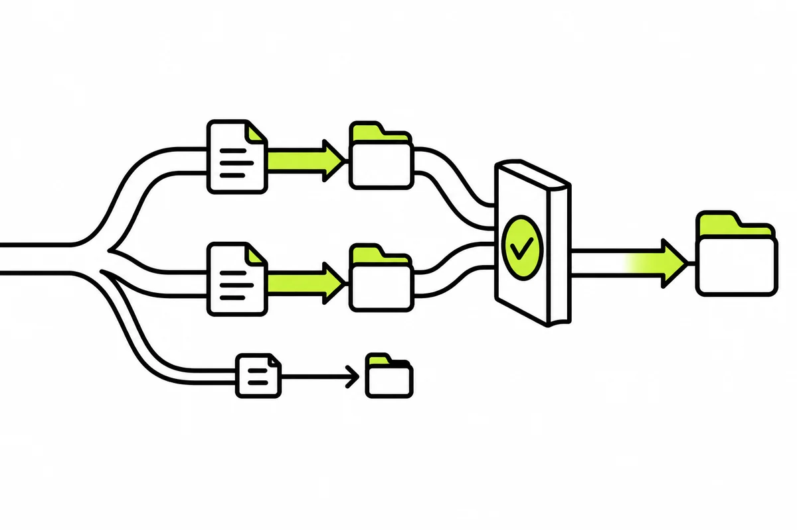

에이전트 하나로는 안 돌아가서 워크트리로 갈랐어요
앱 여러 개, 채널 여러 개, 매일 도는 자동 점검까지 한 세션에서 시키니 맥락이 섞였어요. 그래서 에이전트마다 작업공간을 나누고, 만든 모델이 아닌 다른 모델에게 검증을 맡기는 구조로 바꿨어요. 이때 쓴 도구가 오픈소스 ORCA예요. 쓰면서 확인한 것과 못 한 것을 적어 둬요.
By heysep7 min readORCA 워크트리

한 세션으로는 안 돌아갔어요#
처음에는 한 터미널에서 한 에이전트에게 모든 일을 시켰어요. 앱을 고치다가 영상 작업을 시키고, 다시 앱으로 돌아오면 앞의 맥락이 남아서 엉뚱한 파일을 건드렸어요. 한 작업이 길어지는 동안 다른 작업은 기다려야 하는 것도 문제였어요. 필요한 건 더 똑똑한 에이전트가 아니라 일을 갈라서 동시에 돌릴 자리였어요.
ORCA가 하는 일#
ORCA는 MIT 라이선스 오픈소스예요. 공식 소개 문구는 Codex, Claude Code, OpenCode, Pi를 나란히 돌리고, 각각 자기 git 워크트리에서 돌게 하며 한곳에서 추적한다는 거예요. 아래 기능은 모두 공식 README 기준이고, 제가 전부 써 본 건 아니에요.
- 병렬 워크트리: 한 프롬프트를 에이전트 여러 개에 펼치고, 결과를 비교해 이긴 쪽을 병합해요
- 터미널 분할: 터미널을 계속 쪼개 쓰고 재시작해도 출력이 남아요
- 모바일 컴패니언: 폰에서 에이전트가 끝나면 알림을 받고 후속 지시를 보내요
- 디자인 모드: 화면 요소를 클릭하면 그 HTML·CSS·스크린샷이 프롬프트로 들어가요
저는 이 중 워크트리 분리와 여러 에이전트를 한 화면에서 보는 것을 가장 많이 썼어요.
워크트리로 갈랐어요#
워크트리는 같은 저장소를 폴더를 달리해 여러 개 펼쳐 놓는 git 기능이에요. 에이전트마다 자기 폴더에서 일하니까 서로의 파일을 덮어쓰지 않아요. 제 작업 폴더에는 프로젝트가 여러 개 들어 있고, 프로젝트마다 워크트리가 따로 있어요.
자동 실행도 같은 방식이에요. 「앱인토스 일일 점검」이라는 이름의 자동 실행이 8월 22일부터 매일 밤 23시 40분에 돌았고, 실행마다 별도 워크트리가 남아서 지금 폴더가 23개예요. 매번 깨끗한 작업공간에서 시작하니 전날 실행의 찌꺼기가 다음 날에 섞이지 않아요. 대신 이 폴더들이 쌓인다는 대가가 있어요.
역할을 나눴어요#
| 에이전트 | 맡긴 일 | 이유 |
|---|---|---|
| Claude Code | 구현과 수정, 스킬·훅이 적용되는 주력 | 스킬과 훅을 이쪽에 걸어 뒀어요 |
| Codex(GPT) | 검증. 만든 쪽이 아니라 다른 모델이 점검해요 | 같은 모델은 같은 맹점을 공유한다고 봤어요 |
| OpenCode | 쉬운 작업 | 어려운 일에 쓰는 주력 에이전트가 쉬운 일까지 맡을 필요는 없다고 봤어요 |
OpenCode에는 쉬운 작업을 맡겼어요. 어려운 판단이 필요 없는 일까지 주력 에이전트의 시간과 한도를 쓸 필요는 없다고 봤고, 여러 컴퓨터에서 나눠 돌렸어요.
GPT를 검증에 쓰니 실제로 잡힌 것#
다른 모델에게 검증을 맡기는 건 기분 좋은 아이디어가 아니라, 실제로 값을 한 적이 있어서 규칙으로 넣었어요.
- 돈 계산 오류: 청년미래적금 앱에서 정부기여금은 만기에 일괄 지급인데, 차트가 중간 시점 잔액에도 기여금을 더하고 있었어요. 제가 만든 쪽에서는 못 봤고 Codex 리뷰가 잡았어요. 커밋에도 「코덱스 리뷰 반영」으로 남아 있어요.
- 블라인드 판정: 아이콘 후보를 만든 모델이 아니라 Codex가 라벨 없이 A/B로 채점하는 스크립트를 만들었어요. 좌우를 섞고 크기를 줄이고 판정을 JSON 형식으로 강제하는 것까지 코드가 해요. 한 번은 제가 1순위로 고른 아이콘이 16초 만에 졌고, Codex는 제가 탈락시킨 후보를 「열린 문」으로 읽었어요. 표본은 하나뿐이라 Codex가 옳다는 증거는 아니고, 판정이 반증 가능한 형태로 나온다는 점이 요점이에요.
- 검수 규칙: 같은 모델이 렌즈를 전부 돌려도 같은 맹점을 공유하니, 되돌리기 어려운 변경은 다른 모델의 검토 통과를 완료 조건에 넣었어요.
다른 모델을 부를 때 막힌 곳도 기록해 뒀어요. Codex를 명령으로 부를 때 입력을 안 닫으면 입력을 기다리며 멈춰요. 로그인 상태가 정상으로 보여도 갱신 토큰이 만료되면 실제 호출에서 죽어요. 그래서 호출 코드에 입력 닫기를 넣고, 판정이 안 나오면 통과가 아니라 판정 불가로 끝나게 했어요.
한계와 못 한 것#
- 병렬로 돌려서 시간이 얼마나 줄었는지는 재지 못했어요. 체감은 있지만 수치는 없어요.
- 워크트리가 쌓이는 비용(디스크)은 정리가 필요하다는 것까지만 확인했어요. 얼마나 먹는지는 이 글에서 말하지 않아요.
- 다른 모델 검증이 결함을 얼마나 줄였는지도 비교 실험은 못 했어요. 잡힌 사례가 있다는 것까지가 확인한 범위예요.
- ORCA의 기능 중 제가 안 써 본 것은 README를 옮겼을 뿐이에요.